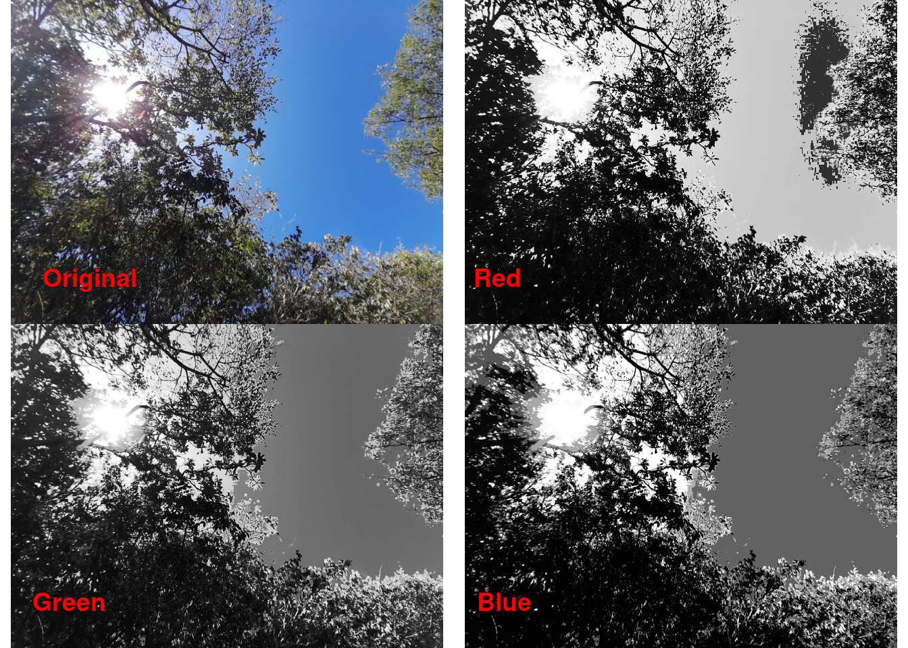
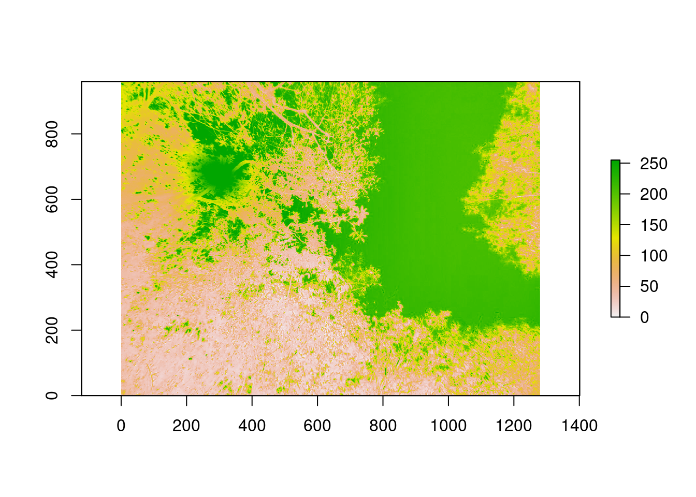
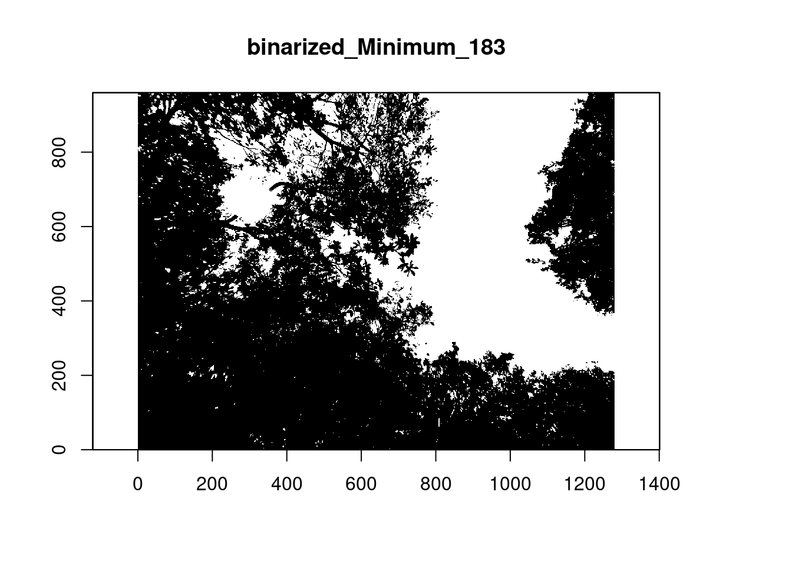
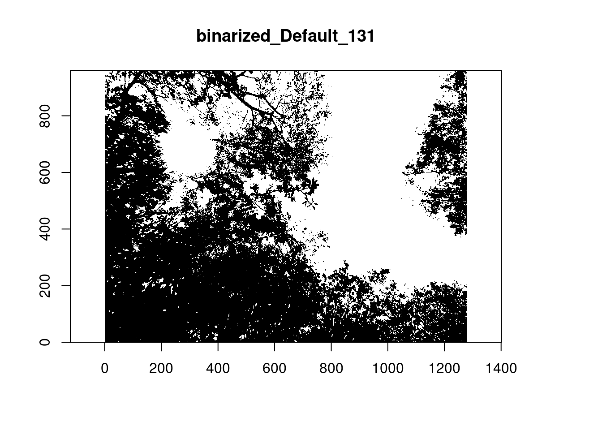
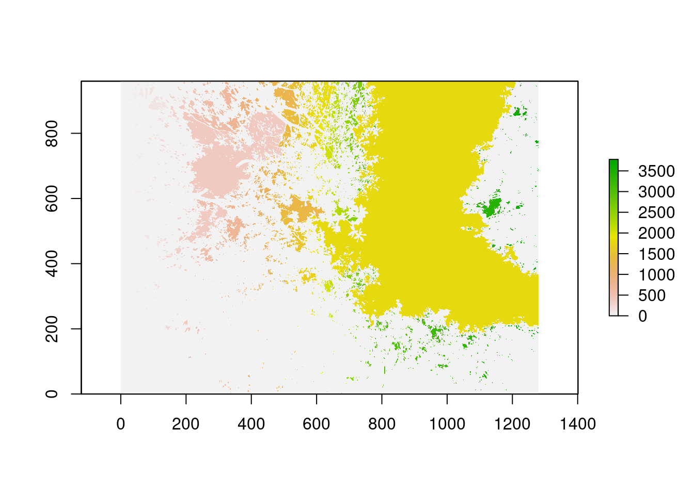
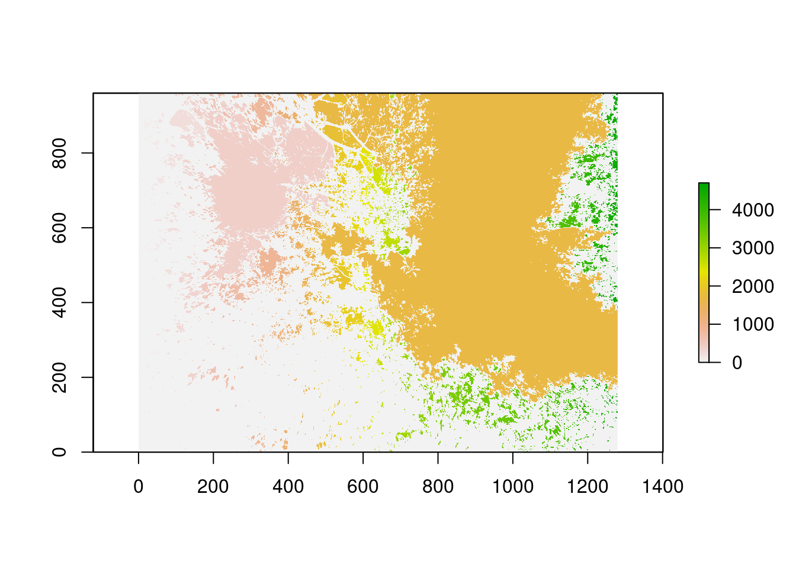
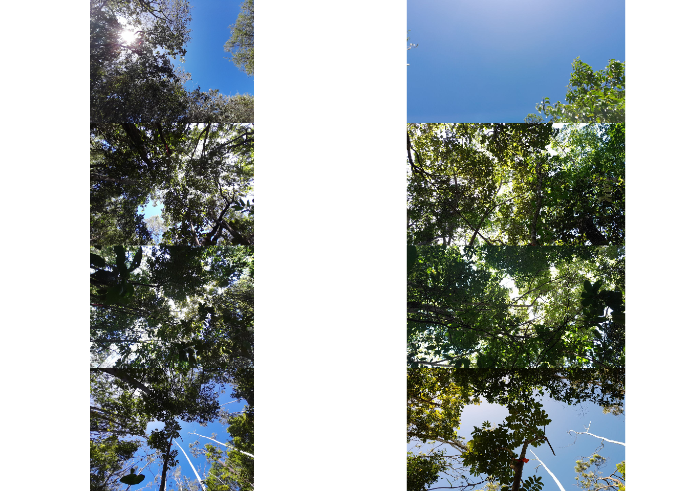

# Repositório BiocManager:
install.packages("BiocManager")
# Pacote {EBImage}
BiocManager::install("EBImage")
# Pacote {exiftoolr} + instalação
devtools::install_github("JoshOBrien/exiftoolr")
exiftoolr::install_exiftool()
# Pacote {coveR}
devtools::install_git("https://gitlab.com/fchianucci/coveR")Propósito
Surgiu uma demanda no laboratório, em que precisarei tirar medidas de cobertura de dossel de cada um dos pitfall-traps que estão instalados em campo.
Para adiantar, resolvi estudar e criar uma rotina para este propósito.
Abaixo explico brevemente cada um dos passos para sua realização.
1. Pacotes utilizados na sessão
Após pesquisar bastante, encontrei o pacote {coveR}, que foi escrito pelo Francesco Chianucci. Você pode ter mais informações no seu artigo de lançamento: veja aqui.
- Para que o
{coveR}possa funcionar, são necessários os pacotes{EBImage}e{exiftoolr}, ver abaixo:
Eu penei um pouco para instalar tudo com sucesso, mas nada que algumas horas de briga com o Linux não resolvam =)
library(coveR) # imagens de cobertura
library(cowplot) # organizar plots
library(here) # localização de arquivos
library(kableExtra) # tabelas
library(knitr) # tabelas/imagens
library(patchwork) # organizar plots
library(tidyverse) # manipulação de dados2. Dados iniciais
2.1. Criar o objeto principal
- Criando objeto
image
image <- here("posts/007-coveR/pics/pt03_ang.png")- O canal azul é preferido porque permite um maior contraste entre os pixels do céu e do dossel
- Isso é ilustrado a seguir:

2.2. Selecionar o canal azul
- Selecionar o canal azul
- Criando objeto
img_blue - Função
open_blue()importa a imagem transformando em um raster de canal único (azul)
img_blue <- open_blue(image, which.blue = 3, exif = FALSE, crop = NULL)
2.3. Classificar os pixels e criar uma imagem binária
- Imagem binária onde céu (1) e dossel (0)
- A função
thd_blue()recebe a imagem rasterizada azul e transforma em binária - Utiliza a função
auto_thresh()do pacote{autothresholdr}para definir o thresholding (limites) da imagem - O padrão é o método “Minimum”, mas existem 17 métodos diferentes que podem ser testados (https://imagej.net/plugins/auto-threshold)
- Criando objetos
img_lim_min(médoto “Minimum”) eimg_lim_def(método “Default”)
img_lim_min <- thd_blue(img_blue, method = "Minimum", display = TRUE)
img_lim_def <- thd_blue(img_blue, method = "Default", display = TRUE)
2.4. Segmentar e nomear as lacunas
- Retornar os atributos do dossel requer uma classificação dos pixels (os valores 1 no raster binário)
- largos: lacunas entre o dossel
- pequenos: lacunas dentro do dossel
- A função
label_gaps()usa a funçãobwlabel()do pacote{EBImage}para atribuir um valor numérico para cada lacuna distinta
img_min_gaps <- label_gaps(img_lim_min)
img_def_gaps <- label_gaps(img_lim_def)
2.5. Classificar lacunas baseadas no tamanho
Existem basicamente dois métodos para classificar as lacunas a depender do seus tamanhos.
- Macfarlane et al., 2007
- Considera lacunas grandes aquelas com 1,3% da área da imagem.
- Alivernini et al., 2018
- Se baseia na distribuição estatística do tamanho das lacunas dentro da imagem.
- Lacunas grandes são consideradas por \(gL \ge \mu + \sqrt{{\sigma \over n}}\)
- Comparado ao método anterior, este é dependente da densidade do dossel, já que o limite das lacunas grandes vão variar a cada imagem.
Os métodos são implementados na função extract_gap():
- Método “Minimum”
# Macfarlane
df_min_mac <- extract_gap(img_min_gaps, gapmethod = "macfarlane")
kable(head(df_min_mac))| id | Var1 | Freq | NR | gL | gapmethod | thd | method | channel | FileSize | Camera | Model | ImageSize | Date | day | month | year |
|---|---|---|---|---|---|---|---|---|---|---|---|---|---|---|---|---|
| pt03_ang.png | 0 | 796127 | 1228800 | Canopy | macfarlane | 0.013 | Minimum | 3 | NA | NA | NA | NA | NA | NA | NA | NA |
| pt03_ang.png | 1 | 41 | 1228800 | Small_gap | macfarlane | 0.013 | Minimum | 3 | NA | NA | NA | NA | NA | NA | NA | NA |
| pt03_ang.png | 2 | 1 | 1228800 | Small_gap | macfarlane | 0.013 | Minimum | 3 | NA | NA | NA | NA | NA | NA | NA | NA |
| pt03_ang.png | 3 | 81 | 1228800 | Small_gap | macfarlane | 0.013 | Minimum | 3 | NA | NA | NA | NA | NA | NA | NA | NA |
| pt03_ang.png | 4 | 18 | 1228800 | Small_gap | macfarlane | 0.013 | Minimum | 3 | NA | NA | NA | NA | NA | NA | NA | NA |
| pt03_ang.png | 5 | 4 | 1228800 | Small_gap | macfarlane | 0.013 | Minimum | 3 | NA | NA | NA | NA | NA | NA | NA | NA |
# Alivernini
df_min_ali <- extract_gap(img_min_gaps, gapmethod = "alivernini")
kable(head(df_min_ali))| id | Var1 | Freq | NR | gL | gMN | gSD | gN | gTHD | gapmethod | thd | method | channel | FileSize | Camera | Model | ImageSize | Date | day | month | year |
|---|---|---|---|---|---|---|---|---|---|---|---|---|---|---|---|---|---|---|---|---|
| pt03_ang.png | 0 | 796127 | 1228800 | Canopy | 796127.0000 | NA | 1 | NA | alivernini | NA | Minimum | 3 | NA | NA | NA | NA | NA | NA | NA | NA |
| pt03_ang.png | 1 | 41 | 1228800 | Small_gap | 114.4335 | 5130.79 | 3781 | 197.8748 | alivernini | NA | Minimum | 3 | NA | NA | NA | NA | NA | NA | NA | NA |
| pt03_ang.png | 2 | 1 | 1228800 | Small_gap | 114.4335 | 5130.79 | 3781 | 197.8748 | alivernini | NA | Minimum | 3 | NA | NA | NA | NA | NA | NA | NA | NA |
| pt03_ang.png | 3 | 81 | 1228800 | Small_gap | 114.4335 | 5130.79 | 3781 | 197.8748 | alivernini | NA | Minimum | 3 | NA | NA | NA | NA | NA | NA | NA | NA |
| pt03_ang.png | 4 | 18 | 1228800 | Small_gap | 114.4335 | 5130.79 | 3781 | 197.8748 | alivernini | NA | Minimum | 3 | NA | NA | NA | NA | NA | NA | NA | NA |
| pt03_ang.png | 5 | 4 | 1228800 | Small_gap | 114.4335 | 5130.79 | 3781 | 197.8748 | alivernini | NA | Minimum | 3 | NA | NA | NA | NA | NA | NA | NA | NA |
- Método “Default”
# Macfarlane
df_def_mac <- extract_gap(img_def_gaps, gapmethod = "macfarlane")
kable(head(df_min_mac))| id | Var1 | Freq | NR | gL | gapmethod | thd | method | channel | FileSize | Camera | Model | ImageSize | Date | day | month | year |
|---|---|---|---|---|---|---|---|---|---|---|---|---|---|---|---|---|
| pt03_ang.png | 0 | 796127 | 1228800 | Canopy | macfarlane | 0.013 | Minimum | 3 | NA | NA | NA | NA | NA | NA | NA | NA |
| pt03_ang.png | 1 | 41 | 1228800 | Small_gap | macfarlane | 0.013 | Minimum | 3 | NA | NA | NA | NA | NA | NA | NA | NA |
| pt03_ang.png | 2 | 1 | 1228800 | Small_gap | macfarlane | 0.013 | Minimum | 3 | NA | NA | NA | NA | NA | NA | NA | NA |
| pt03_ang.png | 3 | 81 | 1228800 | Small_gap | macfarlane | 0.013 | Minimum | 3 | NA | NA | NA | NA | NA | NA | NA | NA |
| pt03_ang.png | 4 | 18 | 1228800 | Small_gap | macfarlane | 0.013 | Minimum | 3 | NA | NA | NA | NA | NA | NA | NA | NA |
| pt03_ang.png | 5 | 4 | 1228800 | Small_gap | macfarlane | 0.013 | Minimum | 3 | NA | NA | NA | NA | NA | NA | NA | NA |
# Alivernini
df_def_ali <- extract_gap(img_def_gaps, gapmethod = "alivernini")
kable(head(df_min_ali))| id | Var1 | Freq | NR | gL | gMN | gSD | gN | gTHD | gapmethod | thd | method | channel | FileSize | Camera | Model | ImageSize | Date | day | month | year |
|---|---|---|---|---|---|---|---|---|---|---|---|---|---|---|---|---|---|---|---|---|
| pt03_ang.png | 0 | 796127 | 1228800 | Canopy | 796127.0000 | NA | 1 | NA | alivernini | NA | Minimum | 3 | NA | NA | NA | NA | NA | NA | NA | NA |
| pt03_ang.png | 1 | 41 | 1228800 | Small_gap | 114.4335 | 5130.79 | 3781 | 197.8748 | alivernini | NA | Minimum | 3 | NA | NA | NA | NA | NA | NA | NA | NA |
| pt03_ang.png | 2 | 1 | 1228800 | Small_gap | 114.4335 | 5130.79 | 3781 | 197.8748 | alivernini | NA | Minimum | 3 | NA | NA | NA | NA | NA | NA | NA | NA |
| pt03_ang.png | 3 | 81 | 1228800 | Small_gap | 114.4335 | 5130.79 | 3781 | 197.8748 | alivernini | NA | Minimum | 3 | NA | NA | NA | NA | NA | NA | NA | NA |
| pt03_ang.png | 4 | 18 | 1228800 | Small_gap | 114.4335 | 5130.79 | 3781 | 197.8748 | alivernini | NA | Minimum | 3 | NA | NA | NA | NA | NA | NA | NA | NA |
| pt03_ang.png | 5 | 4 | 1228800 | Small_gap | 114.4335 | 5130.79 | 3781 | 197.8748 | alivernini | NA | Minimum | 3 | NA | NA | NA | NA | NA | NA | NA | NA |
2.6. Recuperar atributos do dossel
- Função
get_canopy()para estimar os atributos do dossel. - Dentre eles:
- Fração das Lacunas (\(FL\)) = fração dos pixels das lacunas (nomeados por 1 na imagem binária): \(FL = {Tp \over Np}\), onde \(Tp\) é o número de pixels de lacuna, \(Np\) é o número total de pixels;
- Cobertura Foliar (\(CF\)) = complemento da fração das lacunas: \(CF = {1 - FL}\);
- Cobertura do Dossel (\(CD\)) = complemento da fração das lacunas grandes: \(CD = 1 - {Tp \over Np}\);
- Porosidade do Dossel (\(PD\)) = fração das lacunas dentro dos dosséis: \(PD = 1 - {CF \over CD}\)
Os outros atributos podem ser verificados no artigo do Chianucci et al..
- Método “Minimum”
# Macfarlane
df2_min_mac <- get_canopy(df_min_mac)
kable(df2_min_mac)| id | FC | CC | CP | Le | L | CI | k | gapmethod | thd | method | channel | FileSize | Camera | Model | ImageSize | Date | day | month | year |
|---|---|---|---|---|---|---|---|---|---|---|---|---|---|---|---|---|---|---|---|
| pt03_ang.png | 0.6478898 | 0.7132389 | 0.091623 | 2.087622 | 3.409385 | 0.6123163 | 0.5 | macfarlane | 0.013 | Minimum | 3 | NA | NA | NA | NA | NA | NA | NA | NA |
# Alivernini
df2_min_ali <- get_canopy(df_min_ali)
kable(df2_min_ali)| id | FC | CC | CP | Le | L | CI | k | gapmethod | thd | method | channel | FileSize | Camera | Model | ImageSize | Date | day | month | year |
|---|---|---|---|---|---|---|---|---|---|---|---|---|---|---|---|---|---|---|---|
| pt03_ang.png | 0.6478898 | 0.6785124 | 0.0451319 | 2.087622 | 4.204288 | 0.496546 | 0.5 | alivernini | NA | Minimum | 3 | NA | NA | NA | NA | NA | NA | NA | NA |
- Método “Default”
# Macfarlane
df2_def_mac <- get_canopy(df_def_mac)
kable(df2_def_mac)| id | FC | CC | CP | Le | L | CI | k | gapmethod | thd | method | channel | FileSize | Camera | Model | ImageSize | Date | day | month | year |
|---|---|---|---|---|---|---|---|---|---|---|---|---|---|---|---|---|---|---|---|
| pt03_ang.png | 0.5264119 | 0.617063 | 0.1469073 | 1.494835 | 2.366996 | 0.6315324 | 0.5 | macfarlane | 0.013 | Default | 3 | NA | NA | NA | NA | NA | NA | NA | NA |
# Alivernini
df2_def_ali <- get_canopy(df_def_ali)
kable(df2_def_ali)| id | FC | CC | CP | Le | L | CI | k | gapmethod | thd | method | channel | FileSize | Camera | Model | ImageSize | Date | day | month | year |
|---|---|---|---|---|---|---|---|---|---|---|---|---|---|---|---|---|---|---|---|
| pt03_ang.png | 0.5264119 | 0.5692228 | 0.0752093 | 1.494835 | 2.945705 | 0.5074625 | 0.5 | alivernini | NA | Default | 3 | NA | NA | NA | NA | NA | NA | NA | NA |
2.7. Comparação
Para efeito de comparação, abaixo estão todos os bancos de dados produzidos:
a |>
select(methods,
CF = FC,
CD = CC,
PD = CP) |>
kable()| methods | CF | CD | PD |
|---|---|---|---|
| Minimum - Macfarlane | 0.6478898 | 0.7132389 | 0.0916230 |
| Minimum - Alivernini | 0.6478898 | 0.6785124 | 0.0451319 |
| Default - Macfarlane | 0.5264119 | 0.6170630 | 0.1469073 |
| Minimum - Alivernini | 0.5264119 | 0.5692228 | 0.0752093 |
2.8. Programação funcional
Todo o processo anterior foi realizado para apenas uma imagem, abaixo está o processo para maiores volumes de dados.
Eu tirei fotos de 4 pontos diferentes, em 2 formatos diferentes de câmeras:
- ang: lente grande angular
- normal: lente normal
Abaixo, as imagens:

O método utilizado foi o Minimum, e o método de medição de lacunas foi o Macfarlane.
images <- dir(path = here("posts/007-coveR/pics"), pattern = "*.png", full.names = TRUE)
images |>
purrr::map(coveR, method = "Minimum", gapmethod = "macfarlane", exif = FALSE) |>
dplyr::bind_rows() |>
kable()| id | FC | CC | CP | Le | L | CI | k | gapmethod | thd | method | channel | FileSize | Camera | Model | ImageSize | Date | day | month | year |
|---|---|---|---|---|---|---|---|---|---|---|---|---|---|---|---|---|---|---|---|
| pt03_ang.png | 0.6478898 | 0.7132389 | 0.0916230 | 2.0876222 | 3.4093855 | 0.6123163 | 0.5 | macfarlane | 0.013 | Minimum | 3 | NA | NA | NA | NA | NA | NA | NA | NA |
| pt03_normal.png | 0.1219629 | 0.1371821 | 0.1109415 | 0.2601328 | 0.6032588 | 0.4312127 | 0.5 | macfarlane | 0.013 | Minimum | 3 | NA | NA | NA | NA | NA | NA | NA | NA |
| pt10_ang.png | 0.9079427 | 0.9834237 | 0.0767532 | 4.7706883 | 5.0492110 | 0.9448384 | 0.5 | macfarlane | 0.013 | Minimum | 3 | NA | NA | NA | NA | NA | NA | NA | NA |
| pt10_normal.png | 0.9001671 | 1.0000000 | 0.0998329 | 4.6085150 | 4.6085150 | 1.0000000 | 0.5 | macfarlane | 0.013 | Minimum | 3 | NA | NA | NA | NA | NA | NA | NA | NA |
| pt12_ang.png | 0.8985213 | 1.0000000 | 0.1014787 | 4.5758131 | 4.5758131 | 1.0000000 | 0.5 | macfarlane | 0.013 | Minimum | 3 | NA | NA | NA | NA | NA | NA | NA | NA |
| pt12_normal.png | 0.9081239 | 1.0000000 | 0.0918761 | 4.7746290 | 4.7746290 | 1.0000000 | 0.5 | macfarlane | 0.013 | Minimum | 3 | NA | NA | NA | NA | NA | NA | NA | NA |
| pt20_ang.png | 0.6560661 | 0.7758553 | 0.1543963 | 2.1346115 | 2.8989559 | 0.7363380 | 0.5 | macfarlane | 0.013 | Minimum | 3 | NA | NA | NA | NA | NA | NA | NA | NA |
| pt20_normal.png | 0.5302192 | 0.6309549 | 0.1596559 | 1.5109781 | 2.3152690 | 0.6526145 | 0.5 | macfarlane | 0.013 | Minimum | 3 | NA | NA | NA | NA | NA | NA | NA | NA |
3. Resumo
Neste post, mostrei como:
- Fazer upload de imagens para o R;
- Rasterizar imagens;
- Transformar imagens rasterizadas para um formato binário;
- Transformar e classificar lacunas;
- Recuperar atributos de dossel através do pixelamento de imagens;
- Fazer o processo em lotes (batch).
Qualquer dúvida, basta entrar em contato ;)
4. Referências
Chianucci et al. 2022. coveR: an R package for processing digital cover photography images to retrieve forest canopy attributes. Trees, 1-10.
- Link: https://link.springer.com/article/10.1007/s00468-022-02338-5
- GitLab: https://gitlab.com/fchianucci/coveR
Alivernini, A., Fares, S., Ferrara, C. et al. 2018. An objective image analysis method for estimation of canopy attributes from digital cover photography. Trees 32, 713–723.
Macfarlane, Craig; Grigg, Andrew; Crystelle Evangelista. 2007. Estimating forest leaf area using cover and fullframe fisheye photography: Thinking inside the circle. Agricultural and Forest Meteorology 146, 1–2: 1-12.